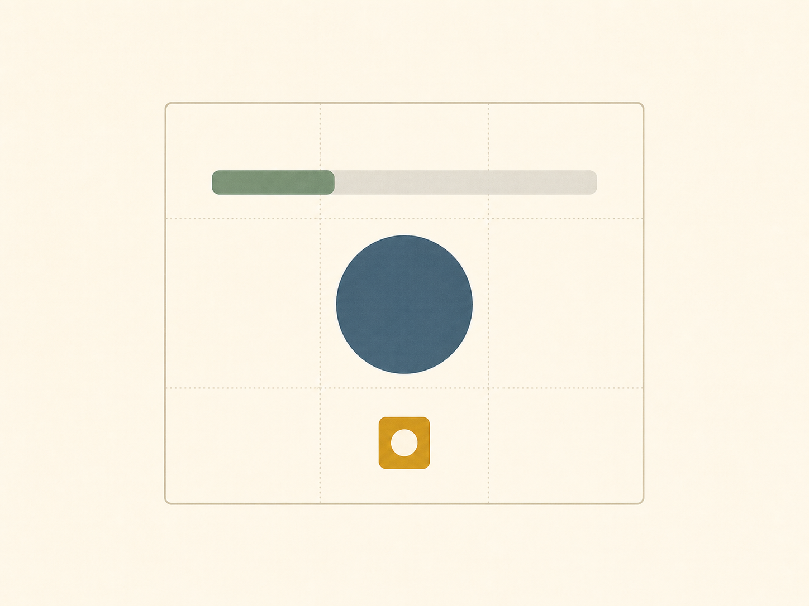

값에 이름을 붙여 다시 사용하기
- 핵심 개념
- 값, 변수, 대입, 갱신
- 이전 학습
- int, float, str, bool
- 확인 방법
- print(), type()
- 연결 실습
- 자기소개 Colab 노트북
오늘의 학습 목표
- 값, 변수, 대입의 관계를 자신의 말로 설명할 수 있습니다.
변수명 = 값을 오른쪽부터 읽고 실행 결과를 추적할 수 있습니다.- 값의 변화가 이미지의 시각 속성에 반영되는 과정을 설명할 수 있습니다.
- 의미가 드러나는 변수명을 작성하고
print(name)과print("name")을 구분할 수 있습니다. - 대표적인 오류의 원인을 찾고, Colab에서 변수를 대입·갱신할 수 있습니다.
오늘 다룰 내용
- 1교시 연결
값을 반복해서 사용하려면 이름이 필요하다는 점을 확인합니다.
- 값, 변수, 대입
대입문을 오른쪽부터 읽고 변수를 사용하는 이유를 이해합니다.
- 값의 갱신
계산 결과를 같은 변수에 다시 대입하는 과정을 살펴봅니다.
- 값에서 이미지로
숫자 값의 변화가 막대 길이와 원 크기에 반영된 결과를 비교합니다.
- 이름 짓기와 출력
읽기 좋은 변수명과 출력용 설명을 정리합니다.
- 같이 실행하기
Colab에서 변수를 대입하고 갱신한 뒤 결과를 확인합니다.
오늘 강의의 중심
앞부분에서는 대입과 갱신을 읽고, 뒷부분에서는 값이 이미지 속성으로 표현되는 과정을 살펴봅니다. 변수명의 세부 규칙과 추가 오류 예시는 수업 후 복습 자료로 활용합니다.
1교시에서 구분한 값에 이름이 필요하다
1교시에서 int, float, str, bool을 값의 표기로 구분하고 type()으로 확인했습니다. 오늘은 그 값에 나중에도 사용할 이름을 붙입니다.
| 값 | 자료형 | 오늘 붙일 이름의 예 |
|---|---|---|
20 | int | age, weekly_hours |
3.5 | float | average_rating |
"blue" | str | favorite_color |
True | bool | likes_data_art |
1교시에는 print("이름:", "서윤")처럼 값을 코드에 직접 적었습니다. 같은 값을 여러 곳에서 사용하거나 나중에 바꾸려면 그 값을 가리키는 이름이 필요합니다. 이 이름을 변수라고 합니다.
값에 이름을 붙여 다시 사용하기
값, 변수, 대입
- 값은 프로그램이 처리하는 실제 데이터입니다. 1교시에서 본
20,3.5,"blue",True가 여기에 해당합니다. - 변수는 값을 다시 찾고 사용할 수 있도록 붙인 이름입니다. 예:
age,favorite_color - 대입은 오른쪽 값을 계산한 뒤 그 결과를 왼쪽 변수에 연결하는 동작입니다. Python에서는
=으로 표시합니다.
오른쪽의 "서윤"을 문자열 값으로 확인합니다.
이후 name을 사용하면 연결된 값 "서윤"을 찾습니다.
name = "서윤"은 “name과 서윤은 같다”보다 “서윤이라는 값을 name이라는 이름과 연결한다”라고 읽는 편이 정확합니다.대입은 값을 연결하고, print()는 출력한다
name = "서윤"을 실행하면 값은 이름과 연결되지만 화면에는 아무것도 나타나지 않습니다. 값을 화면에서 확인하려면 print()를 실행해야 합니다. 각 줄이 값을 이름에 연결하는지, 화면에 출력하는지 구분해 봅시다.
| 실행한 줄 | 연결된 이름 | 화면 |
|---|---|---|
name = "서윤" | name → 서윤 | 없음 |
major = "시각디자인" | name → 서윤, major → 시각디자인 | 없음 |
print(name) | 변화 없음 | 서윤 |
print(major) | 변화 없음 | 시각디자인 |
값에 이름을 붙여도 자료형은 달라지지 않습니다. type(name)은 name에 대입된 값 "서윤"의 자료형, 곧 str을 알려줍니다.
변수가 필요한 이유
1교시에는 값이 필요할 때마다 코드에 직접 적었습니다. 한 줄만 출력할 때는 그것으로 충분합니다.
print("한 주 시간:", 7)
print("한 달 시간:", 7 * 4)여기서 7은 두 번 나옵니다. 한 주 시간을 12로 바꾸려면 두 줄을 모두 고쳐야 합니다. 위쪽만 고치고 아래쪽을 그대로 두면 한 달 계산에는 기존 값 7이 남습니다. 숫자 7만으로는 시간인지, 개수인지, 평점인지도 알기 어렵습니다.
같은 값을 여러 곳에서 사용하고 나중에 쉽게 바꾸며, 코드만 읽어도 값의 의미를 알 수 있게 하려면 값에 이름을 붙여 사용하는 방식이 필요합니다. 이 이름이 변수입니다.
print("한 주 시간:", 7)
print("한 달 시간:", 7 * 4)같은 숫자 7이 서로 다른 두 자리에 있습니다. 한 곳만 바꾸면 결과가 어긋납니다.
weekly_hours = 7
print("한 주 시간:", weekly_hours)
print("한 달 시간:", weekly_hours * 4)7은 한 번만 적습니다. weekly_hours를 사용하면 같은 값을 불러올 수 있고, 값을 대입한 한 줄만 바꾸어 두 출력을 함께 수정할 수 있습니다.
| 하려는 일 | 값을 직접 반복하면 | 이름을 붙이면 |
|---|---|---|
| 같은 값을 여러 곳에서 쓰기 | 같은 숫자를 여러 번 적어야 합니다. | 이름으로 같은 값을 불러옵니다. |
| 값을 바꾸기 | 값을 적은 모든 곳을 찾아 수정해야 합니다. | 값을 대입한 한 줄만 바꾸면 됩니다. |
| 값의 의미 파악하기 | 7만 보고 의미를 추측해야 합니다. | weekly_hours라는 이름에서 의미가 드러납니다. |
다음 절에서 살펴볼 갱신도 이 원리를 이용합니다. 변수에 새 값을 대입하면 그 이름이 가리키는 값이 바뀝니다.
변수 이름에는 따옴표를 붙이지 않습니다
name은 값을 찾기 위한 이름이고 "name"은 n, a, m, e라는 네 글자로 이루어진 문자열입니다. 변수 이름과 글자 데이터는 역할이 다릅니다.
name = "서윤"
print(name)서윤
name = "서윤"
print("name")name
사용하기 전에 먼저 연결해야 한다
코드는 위에서 아래로 실행되므로 변수를 사용하기 전에 먼저 값을 대입해야 합니다. 아직 값이 연결되지 않은 이름을 사용하면 Python은 그 이름을 찾지 못합니다.
name = "서윤"
print(name)결과: 먼저 값을 연결한 뒤 사용하므로 서윤이 출력됩니다.
print(name)
name = "서윤"결과: 첫 줄을 실행할 때 name이 아직 정의되지 않았으므로 NameError가 발생합니다.
변수의 값은 실행 중에 바뀔 수 있다
변수에는 실행 중에도 새로운 값을 다시 대입할 수 있습니다. 다시 대입한 뒤에는 그 이름이 새 값을 가리킵니다.
score = 10
score = score + 5
print(score)score = 10score + 5score = 15score 값으로 먼저 계산한 뒤, 결과 15를 같은 이름에 다시 대입합니다.수학의 등식과 다른 점
score = score + 5는 일반적인 수학 등식으로는 성립하지 않지만, 프로그램의 대입문에는 실행 순서가 있습니다. 오른쪽을 먼저 계산하고 그 결과를 왼쪽 이름에 다시 대입하므로 올바른 명령입니다.
같은 이름이 새 값을 가리키는 과정
아래 코드는 minutes에 값을 처음 대입한 뒤 두 번 갱신합니다. 각 줄을 실행한 뒤의 상태를 따라가면 마지막 출력을 예측할 수 있습니다.
minutes = 30
minutes = minutes * 2
minutes = minutes + 15
print(minutes)| 실행한 줄 | 연결된 이름 | 화면 |
|---|---|---|
minutes = 30 | minutes → 30 | 없음 |
minutes = minutes * 2 | minutes → 60 | 없음 |
minutes = minutes + 15 | minutes → 75 | 없음 |
print(minutes) | 그대로 | 75 |
값이 이미지가 되는 순간
변수는 계산 결과를 출력할 때만 사용하는 것이 아닙니다. 프로그램에서 값을 길이, 크기, 색, 표시 상태 같은 시각 속성과 연결하면 데이터가 이미지의 형태를 결정합니다. 아래 두 이미지는 이 관계를 설명하기 위해 생성형 이미지 도구로 제작한 수업용 개념 시안이며, Python 코드의 실제 실행 화면은 아닙니다.
STATE A와 STATE B는 같은 네 개의 변수를 사용합니다. 두 상태에서 달라진 것은 weekly_hours와 average_rating의 값이며, 이 값과 연결된 시각 요소만 달라집니다.
favorite_content카드의 설명weekly_hours막대 길이average_rating원 크기wants_to_create상태 타일 표시favorite_content = "데이터 아트"
weekly_hours = 4
average_rating = 3.0
wants_to_create = True
weekly_hours = 4, average_rating = 3.0: 막대가 짧고 원이 비교적 작습니다.favorite_content = "데이터 아트"
weekly_hours = 12
average_rating = 4.8
wants_to_create = Trueweekly_hours = 12, average_rating = 4.8: 막대가 길어지고 원이 커집니다.지금 배울 것과 다음에 배울 것
이번 2교시의 목표는 값의 변화가 연결된 시각 속성에 반영되는 관계를 이해하는 것입니다. 이미지를 그리는 함수와 문법은 이번 시간의 학습 범위가 아닙니다. 3주차부터 픽셀, 좌표, RGB, 도형 그리기를 배우며 직접 구현합니다.
두 이미지에서 바뀐 것과 그대로인 것
weekly_hours가 4에서 12로 바뀌며 초록 막대가 길어졌고, average_rating이 3.0에서 4.8로 바뀌며 파란 원이 커졌습니다. 문자열 favorite_content와 불리언 wants_to_create는 같으므로 설명과 상태 타일은 그대로입니다. 이처럼 어떤 시각 요소가 바뀌는지는 그 요소와 연결된 값에 달려 있습니다.
읽기 좋은 이름과 출력
변수 이름은 값의 의미를 설명해야 한다
| 기준 | 권장 | 피할 예 |
|---|---|---|
| 뜻이 드러나는 이름 | daily_music_minutes | d, number |
| 여러 단어 연결 | favorite_color | favorite color |
| 첫 글자 | week2_score | 2week_score |
| 대소문자 일관성 | student_name | StudentName과 혼용 |
이 수업에서는 영문 소문자 단어를 밑줄로 연결하는 snake_case를 기본 규칙으로 사용합니다. 변수명에 공백은 사용할 수 없으며, 숫자로 시작할 수 없습니다.
설명과 값을 함께 출력하기
1교시에서 print("이름:", "서윤")처럼 설명과 값을 함께 출력했습니다. 오늘은 값 자리에 변수 이름을 넣습니다. 괄호 안의 쉼표는 그대로입니다.
name = "서윤"
major = "시각디자인"
print("이름:", name)
print("전공:", major)이름: 서윤
전공: 시각디자인Colab에서 같이 실행하기
1교시 노트북에 새 셀을 추가하거나 새 노트북을 만듭니다. 오늘은 변수의 대입과 갱신을 직접 실행하며 확인합니다. 3교시 미션은 아직 시작하지 않습니다.
변수를 대입하고 갱신합니다
- 1교시 노트북을 열거나 새 노트북을 만듭니다.
- 아래 코드를 새 셀에 적고 Shift+Enter로 실행합니다.
print(name)의 출력과, 같은 셀에서print("name")을 추가했을 때의 차이를 확인합니다.weekly_hours값을 바꾼 뒤 같은 셀을 다시 실행해,monthly_hours가 바뀌는지 확인합니다.
name = "서윤"
weekly_hours = 7
likes_data_art = True
monthly_hours = weekly_hours * 4
print("이름:", name)
print(type(weekly_hours))
print("한 달:", monthly_hours)
print("관심 여부:", likes_data_art)막히면 여기만 봅니다
NameError가 나면 변수에 값을 대입하기 전에 사용하지 않았는지 확인합니다.TypeError가 나면 문자열과 숫자를 바로 더하지 않았는지 확인합니다.- 노트북을 저장해도 런타임을 다시 시작하면 실행 상태는 사라집니다. 대입문이 있는 셀을 다시 실행하세요.
- 3교시 미션 노트북은 아직 열지 않습니다.
오늘 확인한 것
=을 오른쪽부터 읽을 수 있습니다.print(name)과print("name")의 출력이 다른 이유를 말할 수 있습니다.weekly_hours를 바꾸고 계산식을 다시 실행하면monthly_hours도 바뀐다는 점을 확인했습니다.
수업 후 확인
오류 메시지는 마지막 줄부터 읽는다
오류 화면 전체를 한 번에 이해하려고 하지 않습니다. 우선 마지막 줄에서 오류 이름과 오류 설명을 찾고, 그 위에서 문제가 발생한 코드 줄을 확인합니다.
NameError는 정의되지 않은 이름을 사용했음을 알립니다.
문제의 이름name이 이 줄을 실행하는 시점에 연결되어 있지 않습니다.
확인할 질문대입이 이 줄보다 앞에 있는가, 철자와 대소문자가 같은가?
1교시에서 본 "20" + 1의 TypeError도 같은 방식으로 읽습니다. 마지막 줄의 오류 이름부터 확인한 뒤, 양쪽 값의 자료형을 봅니다.
이름 붙이기
아래 네 값을 나타내는 의미 있는 변수명을 각각 하나씩 만들고, 자료형을 옆에 적습니다.
273.5"blue"False
예: image_count = 27은 int입니다.
답을 열어 확인하기
아래 오류 표와 접이식 질문은 강의 중에 모두 다루지 않아도 됩니다. 수업 중에는 NameError 예시 하나를 읽고, 나머지는 자신의 답을 작성한 뒤 개별 복습에 활용합니다.
| 오류 | 예시 원인 | 먼저 확인할 것 |
|---|---|---|
NameError | blue를 따옴표 없이 사용하거나 정의하지 않은 변수를 사용 | 철자, 대소문자, 먼저 대입했는지 확인 |
SyntaxError | 따옴표나 괄호가 닫히지 않음 | 오류가 표시된 줄의 기호 짝 확인 |
TypeError | "20" + 1처럼 서로 호환되지 않는 자료형을 함께 연산 | type()으로 양쪽 값의 자료형 확인 |
1. name = "서윤"에서 값, 변수, 대입 기호는 각각 무엇인가?
값은 "서윤", 변수 이름은 name, 대입 기호는 =입니다. 오른쪽 값을 먼저 확인한 뒤 왼쪽 이름과 연결합니다.
2. name = "서윤" 다음에 print("name")을 실행하면 무엇이 나오는가?
name이 출력됩니다. 따옴표 안의 내용은 이름을 찾아보라는 표시가 아니라 글자 그대로의 데이터입니다. 연결된 값 서윤을 출력하려면 print(name)을 사용합니다.
3. print(name)을 먼저 실행하고 다음 줄에서 name = "서윤"을 실행하면 왜 오류가 나는가?
첫 줄을 실행하는 시점에는 name = "서윤"이 아직 실행되지 않아 name이 정의되어 있지 않기 때문입니다.
4. score = 10 다음에 score = score + 5를 실행하면 score는 얼마인가?
15입니다. 오른쪽의 기존 값 10에 5를 더한 뒤, 계산 결과 15를 같은 이름 score에 다시 대입합니다.
3교시 예고
1교시와 2교시에는 Colab에서 코드를 실행하는 방법을 익혔습니다. 3교시에는 아래 구조를 자신의 정보로 완성하고 저장한 뒤 제출합니다.
name = "서윤"
major = "시각디자인"
favorite_color = "blue"
daily_music_minutes = 75
likes_data_art = True
weekly_music_minutes = daily_music_minutes * 7
print("이름:", name)
print("전공:", major)
print("좋아하는 색:", favorite_color)
print("일주일 음악 감상 시간(분):", weekly_music_minutes)
print("데이터 아트 관심 여부:", likes_data_art)3교시 시작 전 준비 완료 기준
- 네 가지 값의 자료형을 구분할 수 있습니다.
=을 오른쪽부터 읽을 수 있습니다.print()에 변수 이름을 넣었을 때 어떤 값이 나오는지 예측할 수 있습니다.- 오류가 발생하면 마지막 줄의 오류 이름부터 확인할 수 있습니다.
이번 시간에 아직 다루지 않는 것
input(), 자료형 변환, 리스트, 조건문은 이번 시간에 다루지 않습니다. 이번 주의 목표는 직접 정한 값을 변수에 저장하고 계산해 출력하는 작은 프로그램을 완성하는 것입니다.
참고 자료
- Python 공식 튜토리얼: 숫자, 텍스트, 변수Python을 계산기로 사용하고 숫자와 문자열을 다루는 공식 입문 예제
- Python 공식 튜토리얼: 오류와 예외문법 오류와 실행 중 오류를 읽는 공식 안내
- PEP 8: 함수와 변수 이름Python 코드의 가독성과 변수명 작성 관례에 관한 공식 스타일 가이드